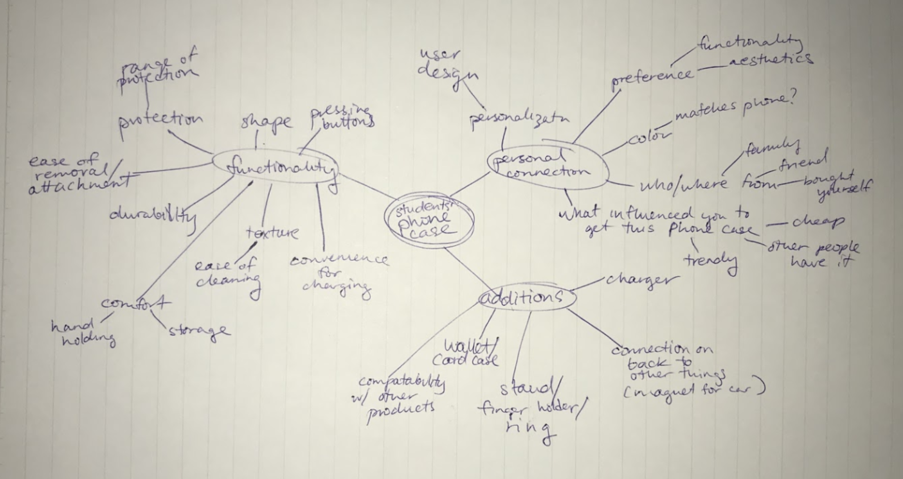
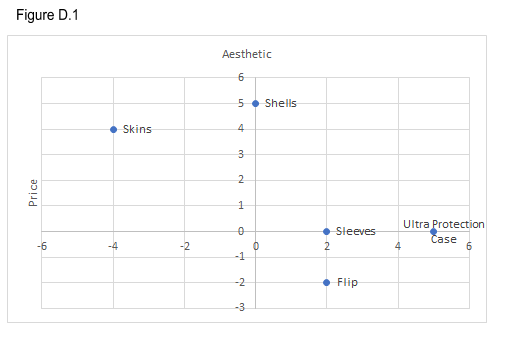
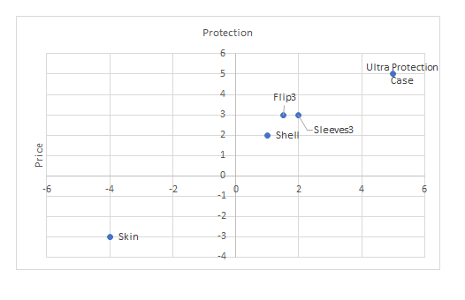
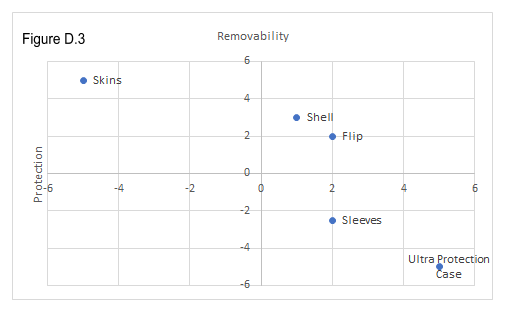
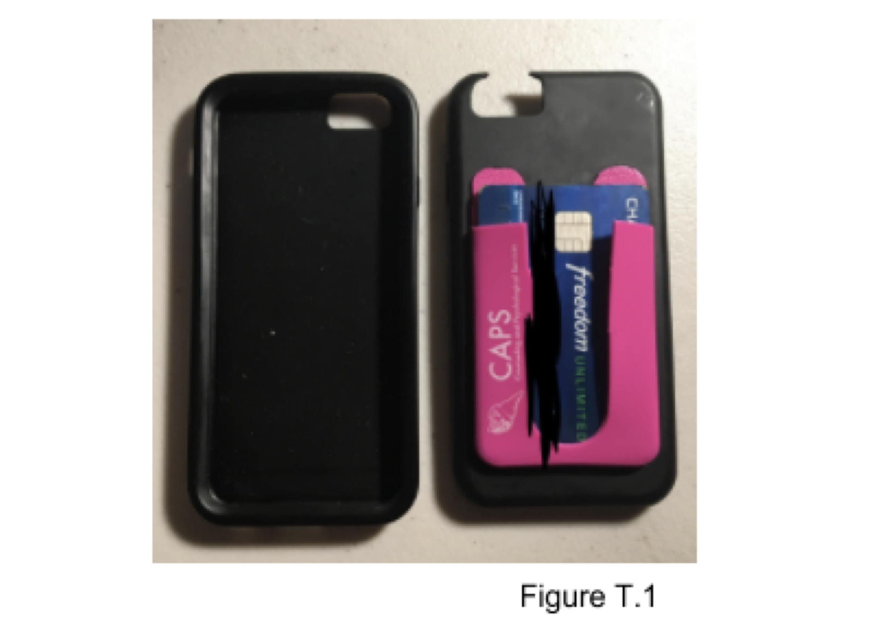
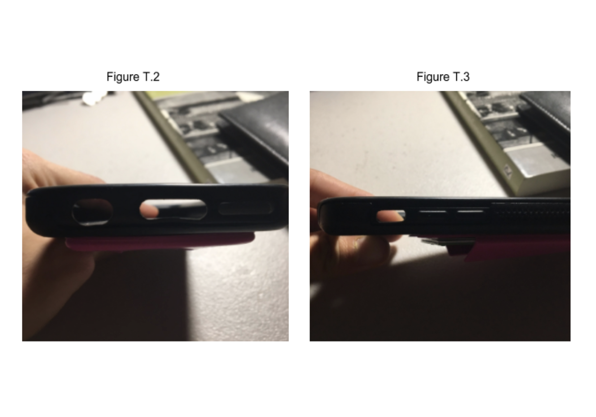
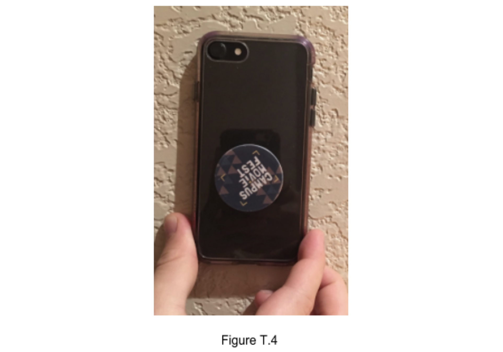

A research on iphone cases
Learn about iPhone cases in a human-centered way.
Learn about iPhone cases in a human-centered way.
Phone case is a fairly common thing. However, some phone cases are hard to use. We are interested in all kinds of phone cases. Our team discovered that poorly designed phone cases are significant contributors to bad user experience.
We conducted contextual field observations as a very important step in both defining the project topic and learning more about the design space. We made a rough draft of looking at the three main topics of functionality, personal connection, and additions, is as follows:

For our interviews, we each conducted them across the UCSD campus. We incorporated the interview techniques we learned before, especially relating to the master/apprentice model, such as: nothing any person does is for no reason (we made it a point to comment on how the students were physically handling their phones in order to take note of their instinctive relationship with it), asking for the guided tour (letting the interviewee really lead the talking,
while appearing very understanding and listening intently, which resulted in interesting comments from each person), and definitely thanking people for their time (this likely made them more open to sending us photos of their cases that we may have forgotten to take ourselves).
We asked the following general questions to interviewees:
• When did you purchase your phone case?
• How long have you had this phone case for?
• Did you have a phone case before that? Why did you stop using it?
• Why did you choose to buy it?
• Can you give me a guided tour of how you putting it on / off?
• Did you need the manual when putting the case on / off?
• Does your phone case support any extension function?
• Can you describe a daily routine with the case involved?
• Does your phone case carry different meanings to you?
• How do you think about your phone case?
We created several design spaces to visualize our data:



In Figure D.1 all of the 5 type of cases were plotted on this design space graph with the factors of aesthetic vs. price. Our project mainly fit in the second and third quadrant as typically when the price increased the aesthetic aspect dropped. College students tend to not afford both aesthetically pleasing cases as well as heavy protection cases. There are no objects in the third quadrants; the ideal product would be in the top left of the second quadrant, as minimizing costs and making it as nice as possible would appeal to the buyers.
In Figure D.2 all 5 types of cases are again plotted on the graph of protection vs. price. This is an essential graph as it shows a positive direct relationship. As price increases, the level of protection that the case provides. The ideal product here would be also be on the top left of the second quadrant, as maximizing protection while minimizing costs would make this certain case very attractive. However, when considering this hypothetical consumers might have to sacrifice weight and thickness as a tradeoff against having sturdy protection.
In the final Figure D.3, the 5 points are plotted on a removability vs. protection graph. It is clear that the more protection corresponds more material, and often times a tighter fit for the phone. Therefore this shows a negative relationship so as protection increases the removability decreases. The ideal product here would be one that lies in the top right corner, where it is easy to remove while providing maximum protection.
Each design has its own tradeoffs. It is a given that cost has a direct relationship with all of the positive elements of a phone case. After collecting our data, we found 3 most important tradeoffs for phone cases. The three tradeoffs are:



Protection vs. Weight/Thickness: We discovered that increased protection had a correlation with the weight and thickness of the case. This is due to more materials corresponding to increased weight. In Figure T.1, the phone case has two components. The phone case has the outer hard shell level for protection, as well as the inner soft rubber skin to surround the entirety of the phone. Often times as thickness and weight increases, it means that the material is more sturdy and there are more surface area and distance to the actual phone designed to absorb shock if the phone is dropped.
Accessibility vs. Protection: These two elements are key to any phone case, but we found that sometimes protection gets in the way of accessibility. In Figure T.2, the headphone jack to the left has accessibility issues. Since there is an abundance of the plastic material for dirt protection, some larger AUX jacks interfere with the case. The user is unable to plug in the jack without removing the case. Furthermore, in Figure T.3, the switch for silencing the phone is slightly hard to access as both the component as a depth to the phone. People with thicker fingers might find trouble with flicking the phone’s silent button. This idea also is true when you consider the opposite. Less material leads to easier access to the buttons, but it adds more risk when the phone gets into an accident.
Personalization vs. Accessibility: College students tend to prioritize aesthetics over other elements of a phone case. Often this means extra personalization that includes stickers, extensions, and attachments. Similar to the idea of protection vs. accessibility, personalization often can make the phone confusing to operate. Also, having a complicated or abnormally sized phone case can also make accessing it from the pocket or bad harder. Extra components or additions might get stuck. When you increase the accessibility of the phone case, often it means a minimal design that doesn’t allow for more extensions and personalizations due to the lack of surface area or covering. For example, Sasha mentioned during his interview that the pop socket on the back of his case (Figure T.4) made it inconvenient to put his phone on certain surfaces or stick it into his pocket because it was bulky.
Made with by Yutong